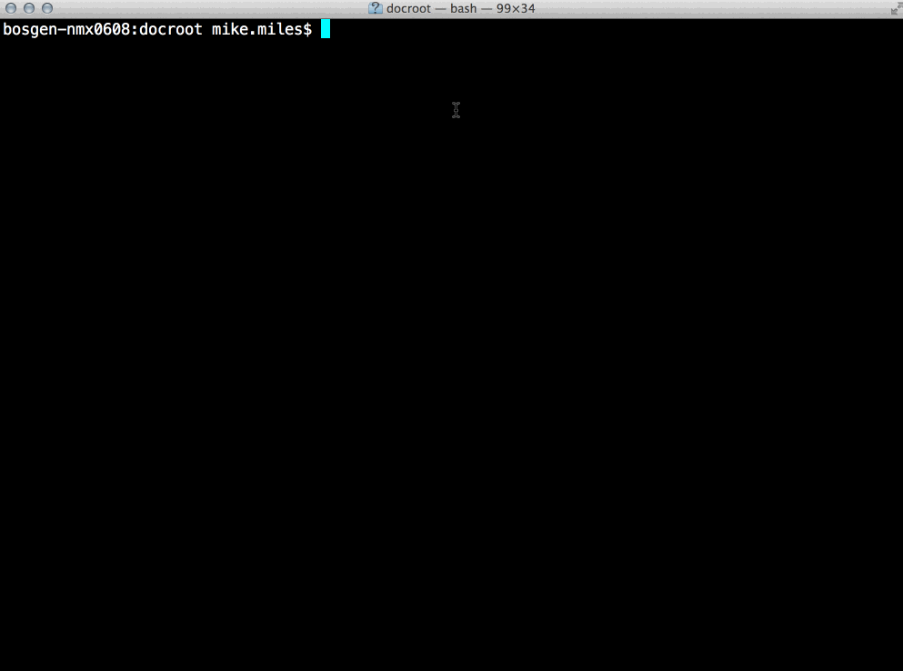
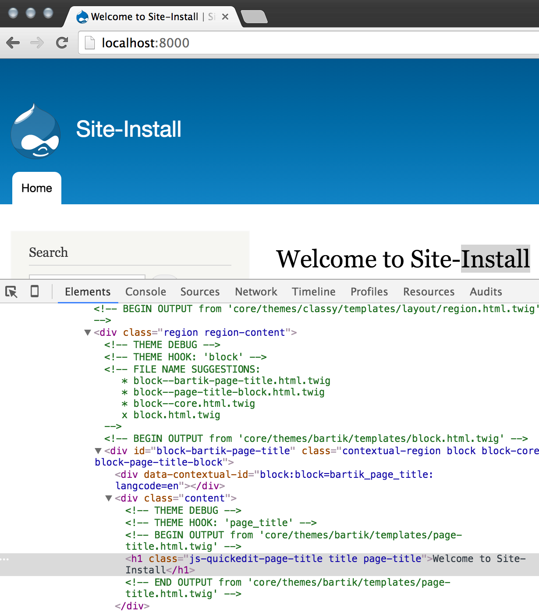

@WeAreGenuine
D8 dev setup /
Michael Miles
Drupal Dev Setup
Quick environment tips for sprinting.
@mikemiles86
Prerequisites
- Assumed PHP (5.5) installed.
- Assumed MySQL (5.5.3)/MariaDB 5.5.20 installed.
- Assumed have Drupal 8 codebase.
Tip #1: Use the PHP built in web server
Do not waste time setting up aliases!
$ php -S <addr>:<port>Example
Tip #2: Enable Development Services
- Allow overriding services and parameters
- Turn off caching, Twig Debugging, etc...
Two steps
- Copy sites/example.settings.local.php
- Save as sites/[yoursite]/settings.local.php
- Create sites/development.services.yml
settings.local.php
<?php
//...
/**
* Enable local development services.
*/
$settings['container_yamls'][] = DRUPAL_ROOT . '/sites/development.services.yml';
/**
* Show all error messages, with backtrace information.
*
* In case the error level could not be fetched from the database, as for
* example the database connection failed, we rely only on this value.
*/
$config['system.logging']['error_level'] = 'verbose';
/**
* Disable CSS and JS aggregation.
*/
$config['system.performance']['css']['preprocess'] = FALSE;
$config['system.performance']['js']['preprocess'] = FALSE;
//...
development.services.yml
# Local development services.
#
# To activate this feature, follow the instructions at the top of the
# 'example.settings.local.php' file, which sits next to this file.
services:
cache.backend.null:
class: Drupal\Core\Cache\NullBackendFactory
parameters:
twig.config:
debug: true
Example
Tip #3: Use Web profiler
Learn everything that is going on with a "page".
- Download and install the devel module.
- https://www.drupal.org/project/devel
- Enable WebProfiler